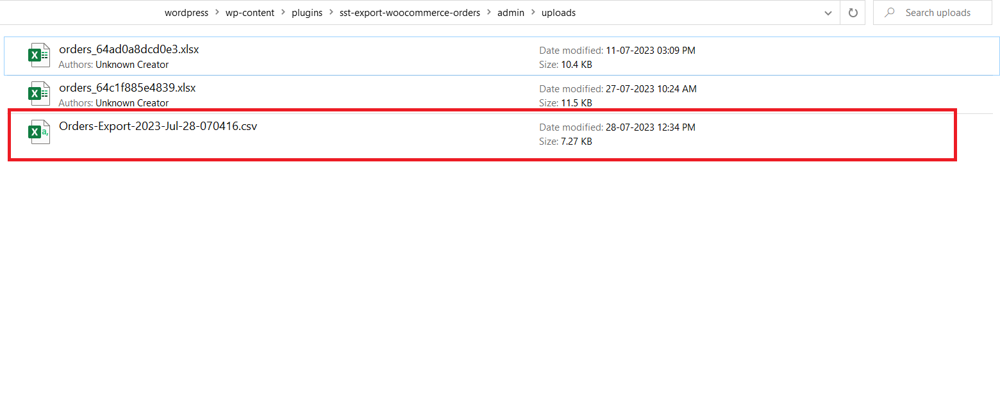

ALL Export Woocommerce Plugin Documentation by “ ShareSoft Technology ” v1.0
ALL Export Woocommerce Plugin
Created: 25-11-2023
Last Update: 24-01-2024
By: ShareSoft Technology
Email: ShareSoft Technology
Information about updates and new features in Plugin are announced on our Social Networks - Twitter and Facebook. Follow us on Twitter to stay tuned on updates and Connect with us on Facebook for more detailed updates
Hello! We would like to thank you for purchasing our plugin! :)
This file will explain you how to set up and use the “ALL Export overview” plugin.
This file looks extensive so you might think that, the plugin is hard to use, but actually it's not! You probably might jump to the options page and explore everything yourself. This file is more of a reference help, if you do not know what to do, or if you are not familiar with WordPress.
Have fun with your new plugin!
Best regards,
ShareSoft Technology
Table of Contents
Overview - top
The ALL Export WooCommerce plugin is a powerful tool designed to simplify and streamline the process of exporting data from your WooCommerce store. It offers a user-friendly interface and a wide range of features to enhance your data exporting experience.
- Export Orders:
- Select specific order details such as billing information, shipping details, items, notes, taxes, and refunds.
- Use drag-and-drop selection for easy customization of exported data fields.
- Bulk select entire order field-groups for quick and efficient exporting.
- Apply advanced filtering to target and export specific orders based on multiple-choice filters.
- Filter orders by customer name.
- Implement date filtering to export orders within specific date ranges.
- Export Customers:
- Choose customer-related data fields for export, ensuring flexibility in the exported information.
- Utilize bulk selection on customer-related field-groups to streamline the exporting process.
- Apply advanced filtering options to export specific customer data based on defined criteria.
- Implement date range filtering to export customers within specific time frames.
- Filter customers based on selected user roles, allowing targeted exports.
- Easily filter customers by usernames or other relevant parameters for precise data extraction.
- Export Products:
- Select product details for export, including comprehensive information such as product details, variations, and custom fields (e.g., Advanced Custom Fields - ACF).
- Implement bulk selection for product-related field-groups to expedite the export process.
- Apply date range filtering to export products added or modified within specific time frames.
- Filter products based on availability, allowing you to export only in-stock or out-of-stock items.
- Set minimum and maximum price ranges for targeted exports based on price criteria.
- Filter products by type (simple, variable, etc.) to export specific types of products.
- Categorize and export products based on specific categories for a more refined data extraction process.
- Export Coupons:
- Easily export coupon details, such as coupon codes, discount amounts, and usage restrictions.
- Use drag-and-drop selection for easy customization of exported data fields.
- Bulk select entire order field-groups for quick and efficient exporting.
- Implement date filtering to export coupons within specific date ranges.
- Export Reviews:
- Export product reviews with details such as reviewer names, ratings, and comments.
- Use drag-and-drop selection for easy customization of exported data fields.
- Bulk select entire order field-groups for quick and efficient exporting.
- Implement date filtering to export reviews within specific date ranges.
After export, the file is available for download in two places:
- Export data in various formats, including CSV, Excel, XML, and JSON.
- Plugin Inside Admin/Uploads Folder: Access the file from the WordPress Admin dashboard.
- Default System Downloads Folder: Quickly find the file on your computer without returning to WordPress.
In summary, the ALL Export WooCommerce plugin offers a comprehensive solution for efficient data exports, simplifying the process and enhancing your WooCommerce management experience.
Installation - top
2.1 Install plugin - top
Install dependency plugin
- Initially install Wordpress as per online documentation.
- Download the woocommerce plugin.
- Then locate folder path /wp-content/plugins.
- Place the downloaded plugin in that folder and extract it.
After that you can view the plugin added in the list in admin area,

2.2 How to install through FTP #1- top
Install plugin
- Initially install Wordpress as per online documentation.
- Download the ALL Export Woocommerce plugin.
- Then locate folder path /wp-content/plugins.
- Place the downloaded plugin in that folder and extract it.
After that you can view the plugin added in the list in admin area,
2.3 How to install through Admin Panel- top
Install plugin
- Initially install Wordpress as per online documentation.
- Download the ALL Export woocommerce plugin.
- Then Go to Wordpress admin panel -> plugins.
- Click Add New --> select ALL Export woocommerce plugin Zip.
- Install and active the plugin

After that you can view the plugin added in the list in admin area,
How the plugin functions - top
3.1 Admin features-top
After activating the ALL Export Woocommerce plugin, next you have to manage Custom admin menu settings.

Click Export Orders menu
Image below, explains how the tabs are used.

Image below , On the Export WooCommerce dashboard, you'll see a list of available data field groups to export.
Use the drag-and-drop interface to select specific data fields you want to include in the export.

Image below, Alternatively, use the "Select All" button for bulk selecting all data fields & "Remove all" button for Remove Bulk Fields.

Image below,Bulk Select on Specific Field-Groups: Perform bulk selections on specific field-groups like "Orders Group" or "Billing Group" with just one click, providing even more convenience and customization.
- Click here All Shipping Datas to select all shipping datas on the available shipping field group .
Select File Formats: Export data in various formats, such as CSV, Excel, XML, and JSON, giving you flexibility and compatibility with different software and systems..
Advanced Filtering: Filter your export woocommerce datas based on their selected filters allowed multiple-choice filter, ensuring you can precisely target and export the datas you need.

Customer Name Filtering: Easily filter orders by customer name, and select multiple customer names simultaneously to narrow down your export results.

Date Filtering: Utilize the date filtering option to select specific date ranges, allowing you to export orders within specific timeframes.

Below image, Select a custom separator option to define how each product should be displayed in the export file. The data for each product will be separated by the chosen separator.
Below image, As you hover over each selected field, a close icon (X) will appear.Click on the close icon to delete the field if you no longer want it in the export.
- Once you've selected the data fields and applied the necessary filters, click the "Export" button.
- The plugin will generate the export file with the chosen data fields, format, and custom separator option.
- You will receive a success message, and the file will be available for download.
- Plugin Inside Admin/Uploads Folder
- Default System Downloads Folder
File Download Locations:
For export customers, products , coupons and reviews the same process will be followed.
3.2 Output view - top
Image below shows that, Once the export is complete, a success message will be displayed, and you can access the exported file in the designated locations as mentioned above.
images shows, Plugin Inside plugins/sst-export-woocommerce-orders/admin/uploads Folder: The exported file will be stored in the designated folder within the WordPress Admin area, making it easily accessible from the WordPress Admin dashboard.
Below images shows that, View the Exported file,
Once again, thank you so much for purchasing this plugin. As we said at the beginning, We would be glad to help you, if you have any questions related to this plugin.
ShareSoft Technology